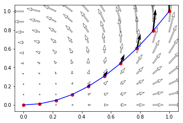
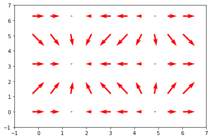

Definition
from sympy import * init_printing() import sympy.vector as sv
x, y, z, t = symbols('x y z t') R = sv.CoordSys3D('R')
def v(x,y,z): # vector field as a function of scalar variables x,y,z return x*y*R.i + 2*y*z*R.j + 3*x*z*R.k
def voft(l): # vector field along path l as a function of t x,y,z = (l.dot(R.i),l.dot(R.j),l.dot(R.k)) # x,y,z as functions of t return v(x,y,z)
def li(l,v): # dl/dt dl = diff(l,t) return integrate(voft(l).dot(dl),(t,0,1))
l1 = 2*t*R.j l2 = 2*(1-t)*R.j + 2*t*R.k l3 = 2*(1-t)*R.k
li(l1,v),li(l2,v),li(l3,v)
l1,l2,l3
dl1 = diff(l1,t) dl2 = diff(l2,t) dl3 = diff(l3,t) dl1,dl2,dl3
voft(l1),voft(l2),voft(l3)
voft(l1).dot(l1),voft(l2).dot(l2),voft(l3).dot(l3)
integrate(voft(l2).dot(dl2),(t,0,1))
A contour is a finite collection of paths joined end to end. A path can be represented as a continuous function form an closed iterval to as follows Then the integration of any complex function along this path is is given by
Question: Find the integration of along the parabolic path from to .
Answer: In order to find the integration we have to find to parametrize the curve as , .
%matplotlib inline import numpy as np from matplotlib import pyplot as plt x,y,t = symbols("x y t") def γ(t): return t + t**2 * 1j def f(z): return z*z # arr = np.linspace(0, 1, 10) # cnums = [γ(t) for t in arr] # imgs = [f(z) for z in cnums] arr = np.linspace(0, 1, 10) # Y = np.linspace(0, 1, 10) X, Y = np.meshgrid(arr, arr) U = X**2 - Y**2 V = 2*X*Y plt.quiver(X, Y, U, V,edgecolor='k', facecolor='None', linewidth=.5) cnums = np.array(list(map(γ, arr ))) imgs = np.array(list(map(f, cnums))) X_0 = list(map(lambda z: z.real, cnums)) Y_0 = list(map(lambda z: z.imag, cnums)) U_0 = list(map(lambda z: z.real, imgs)) V_0 = list(map(lambda z: z.imag, imgs)) plt.plot(X_0, Y_0, color='blue') plt.scatter(X_0, Y_0, color='red') plt.quiver(X_0,Y_0,U_0,V_0) plt.show() # [(f(x+1j*y).real, f(x+1j*y).imag) for x in X for y in Y ]

Here we will do the numerical computation
Δt = cnums[1:]-cnums[:-1] np.dot(imgs[1:],Δt)
(-0.6818686799806022+0.675438053988273j)
Now we do the same computation using integration
integrate(f(γ(t))*diff(γ(t), t),(t,0,1))
import numpy as np from matplotlib import pyplot as plt from matplotlib import animation X, Y = np.mgrid[:2*np.pi:10j,:2*np.pi:5j] U = np.cos(X) V = np.sin(Y) fig, ax = plt.subplots(1,1) Q = ax.quiver(X, Y, U, V, pivot='mid', color='r', units='inches') ax.set_xlim(-1, 7) ax.set_ylim(-1, 7) def update_quiver(num, Q, X, Y): """updates the horizontal and vertical vector components by a fixed increment on each frame """ U = np.cos(X + num*0.1) V = np.sin(Y + num*0.1) Q.set_UVC(U,V) return Q # you need to set blit=False, or the first set of arrows never gets # cleared on subsequent frames anim = animation.FuncAnimation(fig, update_quiver, fargs=(Q, X, Y), interval=50, blit=False) fig.tight_layout() plt.show()

import plotly.plotly as py from plotly.grid_objs import Grid, Column import time column_1 = Column([0.9, 1.1], 'x') column_2 = Column([1.0, 1.0], 'y') column_3 = Column([0.8, 1.2], 'x2') column_4 = Column([1.2, 0.8], 'y2') column_5 = Column([0.7, 1.3], 'x3') column_6 = Column([0.7, 1.3], 'y3') column_7 = Column([0.6, 1.4], 'x4') column_8 = Column([1.5, 0.5], 'y4') column_9 = Column([0.4, 1.6], 'x5') column_10 = Column([1.2, 0.8], 'y5') grid = Grid([column_1, column_2, column_3, column_4, column_5, column_6, column_7, column_8, column_9, column_10]) py.grid_ops.upload(grid, 'points_changing_size_grid'+str(time.time()), auto_open=False) # create figure figure = { 'data': [ { 'xsrc': grid.get_column_reference('x'), 'ysrc': grid.get_column_reference('y'), 'mode': 'markers', 'marker': {'color': '#48186a', 'size': 10} } ], 'layout': {'title': 'Growing Circles', 'xaxis': {'range': [0, 2], 'autorange': False}, 'yaxis': {'range': [0, 2], 'autorange': False}, 'updatemenus': [{ 'buttons': [ {'args': [None], 'label': 'Play', 'method': 'animate'} ], 'pad': {'r': 10, 't': 87}, 'showactive': False, 'type': 'buttons' }]}, 'frames': [ { 'data': [ { 'xsrc': grid.get_column_reference('x2'), 'ysrc': grid.get_column_reference('y2'), 'mode': 'markers', 'marker': {'color': '#3b528b', 'size': 25} } ] }, { 'data': [ { 'xsrc': grid.get_column_reference('x3'), 'ysrc': grid.get_column_reference('y3'), 'mode': 'markers', 'marker': {'color': '#26828e', 'size': 50} } ] }, { 'data': [ { 'xsrc': grid.get_column_reference('x4'), 'ysrc': grid.get_column_reference('y4'), 'mode': 'markers', 'marker': {'color': '#5ec962', 'size': 80} } ] }, { 'data': [ { 'xsrc': grid.get_column_reference('x5'), 'ysrc': grid.get_column_reference('y5'), 'mode': 'markers', 'marker': {'color': '#d8e219', 'size': 100} } ] } ] } py.icreate_animations(figure, 'points_changing_size'+str(time.time()))
import plotly plotly.__version__
'3.7.0'